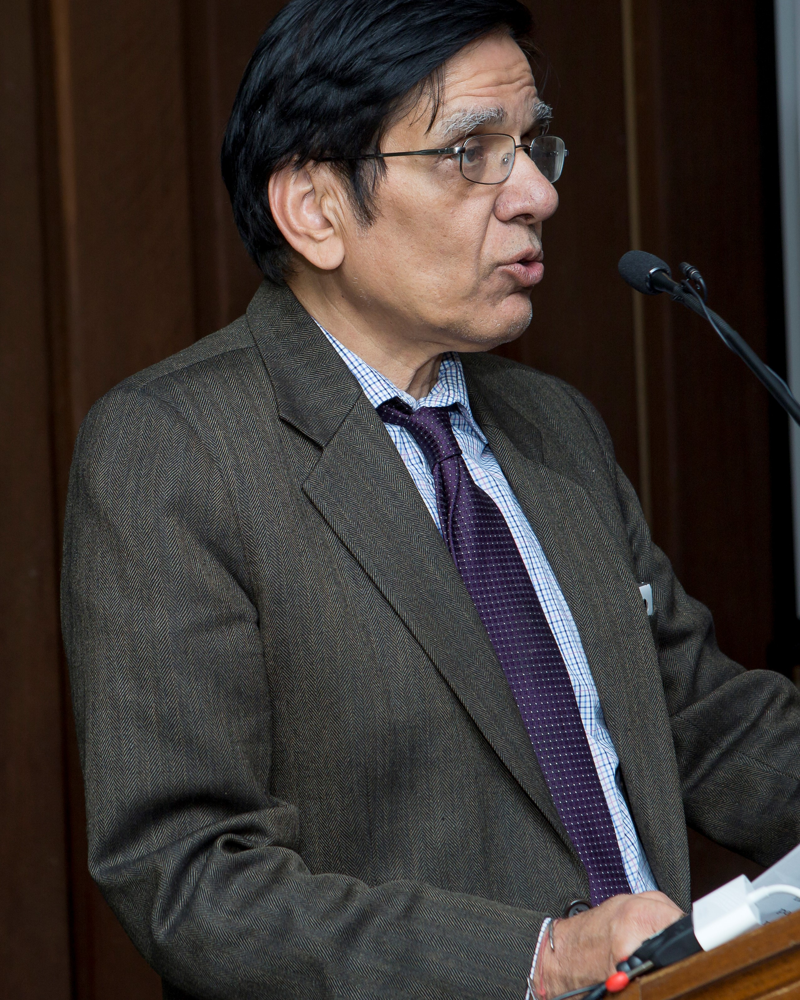

Professor Raghbendra Jha
Raghbendra Jha, PhD (Columbia), Fellow of the World Innovation Foundation (FWIF) is Professor of Economics and Executive Director, Australia South Asia Research Centre, Australian National University. I had my school education in St. Michael’s School Patna and completed my B.A. (Honours) in Economics from St. Stephen’s College, Delhi University in 1973. I completed my M.A. in Economics from Delhi School of Economics, Delhi University in 1975 and then proceeded to New York (USA) to do my PhD in economics from Columbia University. There I had the privilege to work with Prof Edmund S. Phelps, my supervisor. Prof Phelps is the 2006 Nobel Laureate in Economics and one of the most imaginative economists ever known to the profession. After teaching in Columbia University, I moved to Williams College, in north- western Massachusetts. In 1983, I joined the faculty of Delhi School of Economics and taught there until 1992. In between, I was Professor in National Institute of Public Finance and Policy (1988) and Associate Professor, Queen’s University, Canada during 1988, 1989 and 1993-94. I was then Professor at Indian Institute of Management Bangalore (1994-95), visiting Faculty University of Warwick (1996) and Professor and then Senior Professor, Indira Gandhi Institute of Development Research, Mumbai (1995-2000). In 2001 I left Indira Gandhi Institute of Development Research to come to the ANU in January 2001. I have been at the ANU since then. I was head, Arndt- Corden Department of Economics during 2014-2017. I specialise in the areas of macroeconomics, public finance and welfare economics with a country specialisation in India. I have published more than 30 books/monographs from leading publishers and more than 150 papers in leading scientific journals and other refereed outlets. I have consulted widely for a number of organisations including the Reserve Bank of India, the World Bank, the Asian Development Bank, the United Nations and several others. My research has been funded by major agencies including the MacArthur Foundation, International Fund for Agricultural Development, the World Bank, the Asian Development Bank, the United Nations, and International Development Research Centre among several others. I have supervised 23 PhD theses and taught several students over the years. I have written op-ed columns for several newspapers including The Australian, Sydney Morning Herald, Brisbane Courier Mail, Canberra Times, Times of India, Economic Times, Indian Express, New Indian Express, Financial Express, Hindustan Times, Livemint, The Diplomat, Africa Report, Asian Current, Oxford Analytica, and Apec Economies Newsletters, among several others. My twitter address is: @jha_raghbendra